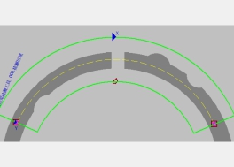
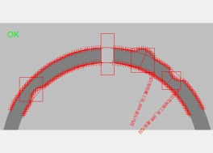
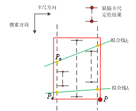
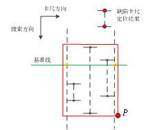
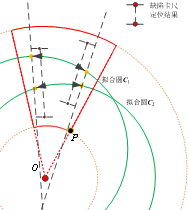
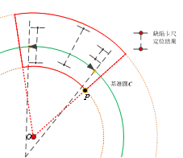
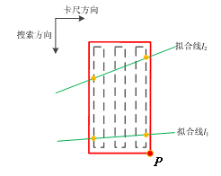
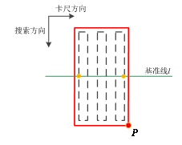
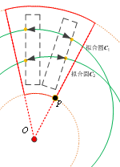
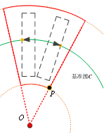

曲线边宽检测工具针对任意曲线边缘类型，通过一组卡尺精确定位边缘特征，并拟合曲线边缘，根据卡尺边缘位置和拟合结果，检测两边缘之间宽度的一致性，检测宽度是否存在异常（过宽或过窄），同时检测是否有裂痕存在。曲线边宽检测示意如图1所示。
 
| 分类 | 参数名称 | 参数描述 |
|---|---|---|
| 属性窗口 | 是否输入胶路数据 | 是：可配置输入胶路数据；否：不可配置输入胶路数据 |
| 边缘1极性 | 理想边缘1的边缘极性，分为3种：任意极性、亮到暗和暗到亮。 | |
| 边缘2极性 | 理想边缘2的边缘极性，分为3种：任意极性、亮到暗和暗到亮。 | |
| 对比度阈值 | 卡尺工具默认只采用对比度评价分数，即按照边缘信号的强度来评分，输出边缘最强的点。对比度阈值的取值范围是0~255。 | |
| 滤波器半宽 | 卡尺工具在拟合过程中，会对图像进行滤波处理以增强边缘信息，其中滤波半宽是可调的，滤波半宽默认值为1。取值范围：[1,20] | |
| 是否卡尺参数一致 | 拥护可根据该参数选择是否分段设置卡尺参数。选择“是”，各段卡尺使用同一参数；选择“否”，各段卡尺使用不同参数， 并显示卡尺序号参数。 |
|
| 卡尺序号 | 曲线边宽检测工具中，为了适应曲线的复杂性，可以设置多段卡尺，并针对每段卡尺设置不同的缺陷检测参数。 当前卡尺序号指出了当前被选中的卡尺，以下缺陷检测参数都是针对该段卡尺设置的。 |
|
| 最小宽度 | 理想边缘1与理想边缘2之间的宽度正常范围为[dmin,dmax]，dmin即为最小宽度，若宽度小于该值，则判定为缺陷（窄缺陷）。取值范围：(0,最大宽度) | |
| 最大宽度 | 理想边缘1与理想边缘2之间的宽度正常范围为[dmin,dmax]，dmax即为最大宽度，若宽度大于该值，则判定为缺陷（宽缺陷）。取值范围：(最小宽度,1000000.0) | |
| 是否启用尺寸 | 勾选后，则使用窄/宽缺陷持续长度上/下限参数，并根据窄/宽缺陷持续长度上/下限参数对缺陷结果进行过滤。 | |
| 窄缺陷持续长度下限 | 判断为窄缺陷的最小持续长度，大于此值为窄缺陷；小于此值判断为干扰，不记为缺陷。取值范围：(0,窄缺陷持续长度上限) | |
| 窄缺陷持续长度上限 | 判断为窄缺陷的最大持续长度，小于此值为窄缺陷。取值范围：(窄缺陷持续长度下限,1000000.0) | |
| 宽缺陷持续长度下限 | 判断为宽缺陷的最小持续长度，大于此值为宽缺陷；小于此值判断为干扰，不记为缺陷。取值范围：(0,宽缺陷持续长度上限) | |
| 宽缺陷持续长度上限 | 判断为宽缺陷的最大持续长度，小于此值为宽缺陷。取值范围：(宽缺陷持续长度下限,1000000.0) | |
| 是否启用面积 | 勾选后，则使用窄/宽缺陷面积上/下限参数，并窄/宽缺陷面积上/下限参数对缺陷结果进行过滤。 | |
| 窄缺陷面积下限 | 判断为窄缺陷的最小面积，大于此值为窄缺陷；取值范围：(0,窄缺陷面积上限) | |
| 窄缺陷面积上限 | 判断为窄缺陷的最大面积，小于此值为窄缺陷；取值范围：(窄缺陷面积下限,1000000.0) | |
| 宽缺陷面积下限 | 判断为宽缺陷的最小面积，大于此值为宽缺陷；取值范围：(0,宽缺陷面积上限) | |
| 宽缺陷面积上限 | 判断为宽缺陷的最大面积，小于此值为宽缺陷；取值范围：(宽缺陷面积下限,1000000.0) | |
| 过滤窄缺陷 | 宽度小于正常宽度即为窄缺陷。该参数选择“是”，则可以将缺陷结果中的窄缺陷过滤掉。 | |
| 过滤宽缺陷 | 宽度大于正常宽度即为宽缺陷。该参数选择“是”，则可以将缺陷结果中的宽缺陷过滤掉。 | |
| 是否检测断裂 | 选择“是”，则同时检测缺陷和断裂，并显示允许断裂长度上/下限等参数。 | |
| 允许断裂长度下限 | 断裂的最小距离，小于该距离，则不认为是断裂。取值范围：(0,允许断裂长度上限) | |
| 允许断裂长度上限 | 断裂的最大距离，大于该距离，则不认为是断裂。取值范围：(允许断裂长度下限,1000000.0) | |
| 实时显示结果 | 选择“是”，在修改工具参数后，不需要运行工具，就可以实时显示结果；选择“否”，改变参数后需要运行工具才会显示对应的结果。 | |
| 结果是否取反 | 选择“是”，则将工具的执行结果取反，例如结果为false，选择取反后，结果变为true，反之亦然。 | |
| 最大缺陷数目 | 检测到的缺陷数量最大值。取值范围：(0,1000000.0) | |
| 最大断裂数目 | 断裂结果数目的最大值，若断裂数目超过该值，则按照断裂排序规则，过滤掉断裂结果中排在后位的断裂。取值范围：(0,1000000.0) | |
| 图像窗口 | 检测区域 | 图像中参与检测的可变矩形区域。 |
| 输入图像 | 显示待检测的图像。 | |
| 数据链 | 二维线性变换 | 目标相对于模板的平移、旋转、缩放变换。 |
| 输入胶路数据 | 链接胶路编辑工具的胶路输出 | |
| 像素当量 | 靶标相机标定工具的输出参数像素当量，即每个像素代表的实际物理尺寸，单位mm。 | |
| 边缘1拟合点集 | 上边缘拟合点的集合 | |
| 边缘2拟合点集 | 下边缘拟合点的几何 | |
| 缺陷区域 | 勾选后，则显示图像检测区域内的缺陷。 | |
| 断裂区域 | 勾选后，则显示图像检测区域内的断裂。 | |
| 最短线段 | 理想边缘1与理想边缘2之间的宽度最小值。 | |
| 最长线段 | 理想边缘1与理想边缘2之间的宽度最大值。 | |
| 高级界面 | 边缘1极性 | 理想边缘1的边缘极性，分为3种：任意极性、亮到暗和暗到亮。 |
| 边缘2极性 | 理想边缘2的边缘极性，分为3种：任意极性、亮到暗和暗到亮。 | |
| 对比度阈值 | 卡尺工具默认只采用对比度评价分数，即按照边缘信号的强度来评分，输出边缘最强的点。对比度阈值的取值范围是[0, 255]。 | |
| 滤波器半宽 | 卡尺工具在拟合过程中，会对图像进行滤波处理以增强边缘信息，其中滤波半宽是可调的，滤波半宽默认值为1， 取值范围是[1, 20]。 |
|
| 卡尺序号 | 曲线边宽检测工具中，为了适应曲线的复杂性，可以设置多段卡尺，并针对每段卡尺设置不同的缺陷检测参数。 卡尺序号指出了当前被选中的卡尺。 |
|
| 是否卡尺参数一致 | 拥护可根据该参数选择是否分段设置卡尺参数。勾选，各段卡尺使用同一参数，且卡尺序号参数不可用； 取消勾选，各段卡尺使用不同参数。 |
|
| 最小宽度 | 理想边缘1与理想边缘2之间的宽度正常范围为[dmin,dmax]，dmin即为最小宽度，若宽度小于该值，则判定为缺陷（窄缺陷）。取值范围：(0,最大宽度) | |
| 最大宽度 | 理想边缘1与理想边缘2之间的宽度正常范围为[dmin,dmax]，dmax即为最大宽度，若宽度大于该值，则判定为缺陷（宽缺陷）。取值范围：(最小宽度,1000000.0) | |
| 允许断裂长度下限 | 断裂的最小距离，小于该距离，则不认为是断裂。取值范围：(0,允许断裂长度上限) | |
| 允许断裂长度上限 | 断裂的最大距离，大于该距离，则不认为是断裂。取值范围：(允许断裂长度下限,1000000.0) | |
| 是否检测断裂 | 选择“是”，则同时检测缺陷和断裂，并显示允许断裂长度上/下限等参数。 | |
| 过滤窄缺陷 | 宽度小于正常宽度即为窄缺陷。该参数选择“是”，则可以将缺陷结果中的窄缺陷过滤掉。 | |
| 过滤宽缺陷 | 宽度大于正常宽度即为宽缺陷。该参数选择“是”，则可以将缺陷结果中的宽缺陷过滤掉。 | |
| 高级选项 | 以上为基本参数，勾选高级选项后，显示高级参数。 | |
| 最强边缘 | 选择“是”，则启用最强边缘准则以获取最佳边缘。其中，最强边缘与第一边缘不能同时选择“否”。 | |
| 第一边缘 | 选择“是”，则启用第一边缘准则以获取最佳边缘。其中，最强边缘与第一边缘不能同时选择“否”。 | |
| 重新评分 | 重新评分的目的是对候选边缘进行更新，以降低干扰边缘带来的误判。重新评分添加边缘到拟合线的距离作为新的评价指标，对每个 卡尺的所有边缘进行评分，距离越小，分数越高，分数取值范围为[0,100]。重新评分后，将“重新评分”准则代替“第一边缘”准则（若有）， 再与“最强边缘”准则（若有）作几何评价，得到最终的评价分数，然后在每个卡尺内，选取分数最高的作为候选边缘。 |
|
| 过滤异常值 | 过滤异常值的目的是对拟合边缘（点）进行筛选，以降低偏差边缘给拟合带来的干扰。筛选的原则是基于拟合点在卡尺搜索方向上到 拟合曲线的距离，过滤距离较大的点，根据设定的距离阈值对拟合边缘进行更新。 |
|
| 过滤距离阈值 | 过滤掉到拟合曲线的距离大于过滤阈值的拟合点。以直线边缘为例，在卡尺搜索方向上，若拟合点到拟合线的距离大于过滤距离阈值， 则去除该拟合点，剔除掉所有距离过大的拟合点后，再由剩下的其它拟合点重新拟合直线。取值范围：[0,1000] |
|
| 是否启用尺寸 | 勾选后，则使用窄/宽缺陷持续长度上/下限参数，并根据窄/宽缺陷持续长度上/下限参数对缺陷结果进行过滤。 | |
| 是否启用面积 | 勾选后，则使用窄/宽缺陷面积上/下限参数，并窄/宽缺陷面积上/下限参数对缺陷结果进行过滤。 | |
| 最大缺陷数目 | 缺陷结果数目的最大值，若缺陷数目超过该值，则按照缺陷排序规则，过滤掉缺陷结果中排在后位的缺陷。取值范围：(0,1000000.0) | |
| 缺陷排序规则 | 排序规则分为3种：尺寸、面积和位置，根据选择的规则对缺陷结果进行排序。其中，尺寸和面积为从大到小排序，位置为沿着卡尺方向从左到右排序。 | |
| 最大断裂数目 | 断裂结果数目的最大值，若断裂数目超过该值，则按照断裂排序规则，过滤掉断裂结果中排在后位的断裂。取值范围：(0,1000000.0) | |
| 断裂排序规则 | 排序规则分为3种：尺寸、面积和位置，根据选择的规则对断裂结果进行排序。其中，尺寸和面积为从大到小排序，位置为沿着卡尺方向从左到右排序。 | |
| 拟合边缘 | 勾选后，则显示图像检测区域内的拟合曲线。 | |
| 拟合点集 | 勾选后，则显示图像检测区域内卡尺检测到的边缘点。 | |
| 缺陷区域 | 勾选后，则显示图像检测区域内的缺陷。 | |
| 断裂区域 | 勾选后，则显示图像检测区域内的断裂。 | |
| 宽度缺陷 | 检测结果中的宽度缺陷的位置、尺寸、面积等信息。 | |
| 断裂 | 检测结果中的断裂的位置、尺寸、面积等信息。 |
| 分类 | 参数名称 | 参数描述 |
|---|---|---|
| 监视窗口 | 输入图像 | 输出图像宽度、高度、像素大小。 |
| 缺陷总数 | 过滤后的缺陷结果总数目。 | |
| 缺陷偏差 | 缺陷的位置、尺寸、面积等信息。 | |
| 断裂总数 | 过滤后的断裂结果总数目。 | |
| 断裂偏差 | 断裂的位置、尺寸、面积等信息。 | |
| 缺陷参数 | 缺陷的起点，终点，面积，最小外接矩形的中心，高度，其最小外接矩形能覆盖的路径点和段等信息 | |
| 断裂参数 | 断裂的起点，终点，面积，最小外接矩形的中心，高度，其最小外接矩形能覆盖的路径点和段等信息 | |
| 最短线段长度 | 理想边缘1与理想边缘2之间的宽度最小值。 | |
| 最长线段长度 | 理想边缘1与理想边缘2之间的宽度最大值。 | |
| 执行结果 | 工具执行结果。 | |
| 执行时间 | 工具执行时间。 | |
| 图像窗口 | 输入图像 | 显示工具执行结果图像，同监视窗口的输入图像参数。 |
| 拟合曲线 | 属性窗口的是否显示拟合结果参数选择是时，显示图像检测区域内的拟合曲线。 | |
| 拟合点集 | 属性窗口的是否显示拟合点集参数选择是时，显示图像检测区域内卡尺检测到的边缘点。 | |
| 缺陷结果 | 属性窗口的是否显示缺陷结果参数选择是时，显示图像检测区域内的缺陷结果。 | |
| 断裂结果 | 属性窗口的是否显示断裂结果参数选择是时，显示图像检测区域内的断裂结果。 | |
| 最短线段长度 | 显示理想边缘1与理想边缘2之间的最小宽度。 | |
| 最长线段长度 | 显示理想边缘1与理想边缘2之间的最大宽度。 | |
| 尺寸内最短线段长度 | 尺寸内（指满足窄/宽缺陷持续长度上/下限范围内所有曲线边，包括正常边与缺陷边）的最短线段长度。 | |
| 尺寸内最长线段长度 | 尺寸内（指满足窄/宽缺陷持续长度上/下限范围内所有曲线边，包括正常边与缺陷边）的最长线段长度。 | |
| 尺寸内平均线段长度 | 尺寸内（指满足窄/宽缺陷持续长度上/下限范围内所有曲线边，包括正常边与缺陷边）的平均线段长度。 | |
| 执行结果 | 显示工具执行结果，执行成功显示“OK”，执行失败显示“NG”，同监视窗口的执行结果参数。 | |
| 数据链 | 输入图像 | 输出图像宽度、高度、像素大小，同监视窗口的输入图像参数。 |
| 缺陷总数 | 过滤后的缺陷结果总数目，供后序工具使用，同监视窗口的缺陷总数参数。 | |
| 缺陷偏差 | 缺陷的位置、尺寸、面积等信息，供后序工具使用，同监视窗口的缺陷偏差参数。 | |
| 断裂总数 | 过滤后的断裂结果总数目，供后序工具使用，同监视窗口的断裂总数参数。 | |
| 断裂偏差 | 断裂的位置、尺寸、面积等信息，供后序工具使用，同监视窗口的断裂偏差参数。 | |
| 缺陷参数 | 缺陷的起点，终点，面积，最小外接矩形的中心，高度，其最小外接矩形能覆盖的路径点和段等信息 | |
| 断裂参数 | 断裂的起点，终点，面积，最小外接矩形的中心，高度，其最小外接矩形能覆盖的路径点和段等信息 | |
| 最短线段长度补偿 | 计算最短线段长度所需补偿值 | |
| 最长线段长度补偿 | 计算最长线段长度所需补偿值 | |
| 尺寸内最短线段长度补偿 | 计算尺寸内最短线段长度所需补偿值 | |
| 尺寸内最长线段长度补偿 | 计算尺寸内最长线段长度所需补偿值 |
偏差的尺寸、面积、区域、位置等物理量的概念与计算方式如下表所示。
| 偏差类型 | 示意图 | 说明 |
|---|---|---|
| 直线缺陷（启用重新评分） |  | 尺寸：左右缺陷卡尺与两条拟合线交点距离的平均ds=(d1+d2)/2，d1和d2分别为左右缺陷卡尺与拟合线1、拟合线2交点距离；面积：同折线边缘缺陷；区域：仿射矩形，图中红色区域所示；位置：缺陷区域右下角 |
| 直线缺陷（不启用重新评分） |  | 尺寸：左右缺陷卡尺与卡尺基准线交点距离ds；面积：同折线边缘缺陷；区域：仿射矩形，图中红色区域所示；位置：缺陷区域右下角 |
| 圆缺陷（启用重新评分） | ) | 尺寸：左右缺陷卡尺与两拟合圆交点所在弧线段距离的平均ds=(d1+d2)/2，d1和d2分别为左右缺陷卡尺与拟合圆1、拟合圆2交点所在弧线段距离；面积：同折线边缘缺陷；区域：扇形，图中红色区域所示；位置：扇形区域右下角 |
| 圆缺陷（不启用重新评分） |  | 尺寸：左右缺陷卡尺与基准圆交点所在弧线段距离ds；面积：同折线边缘缺陷；区域：扇形，图中红色区域所示；位置：扇形区域右下角 |
| 直线间距（启用重新评分） |  | 尺寸：左右间距卡尺与两拟合线交点距离的平均ds=(d1+d2)/2，d1和d2分别为左右缺陷卡尺与拟合线1、拟合线2交点距离；面积：同折线边缘间距；区域：仿射矩形，图中红色区域所示；位置：缺陷区域右下角 |
| 直线间距（不启用重新评分） |  | 尺寸：左右间距卡尺与基准线交点距离ds；面积：同折线边缘间距；区域：仿射矩形，图中红色区域所示；位置：缺陷区域右下角 |
| 圆间距（启用重新评分） |  | 尺寸：左右间距卡尺与两拟合圆交点所在弧线段距离的平均ds=(d1+d2)/2，d1和d2分别为左右缺陷卡尺与拟合线1、拟合线2交点距离；面积：同折线边缘间距；区域：扇形，图中红色区域所示；位置：扇形区域右下角； |
| 圆间距（不启用重新评分） |  | 尺寸：左右间距卡尺与基准圆交点所在弧线段距离ds；面积：同折线边缘间距；区域：扇形，图中红色区域所示；位置：扇形区域右下角； |
工具执行前，可以对两边缘的宽度进行预估，并以此设置最小宽度和最大宽度参数，提升效率和结果准确性。
曲线边宽检测工具要和数组解析工具、边特征检测工具结果解析配合使用。数组解析工具的数据类型选择“EdgeDeviation”可以获取曲线边宽检测工具的输出缺陷偏差和断裂偏差，再将数组解析工具的输出数据作为边特征检测工具结果解析的输入进行解析。
参见“\Samples\曲线边宽检测.gvp”。